MSc in Bioinformatics
University of Bologna · 110/110 cum laude with highest honors · Erasmus+ thesis scholarship at the University of Lisbon
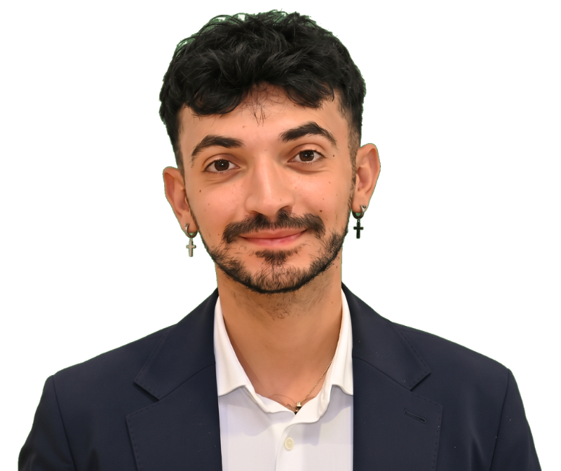
Data Scientist
Bioinformatician turning biomedical and neural data into predictive models, from CSF proteomics to primate electrophysiology.
See my workcum laude, highest honors
cum laude
Lisbon & Bologna
IT · EN (C1) · PT (A1)
LASIGE, University of Lisbon
DIBINEM, University of Bologna
Centro Computer S.p.A.
University of Bologna · 110/110 cum laude with highest honors · Erasmus+ thesis scholarship at the University of Lisbon
University of Bologna · 110/110 cum laude
Liceo Scientifico M. Morandi, Finale Emilia · 97/100
Both full documents, readable right here: scroll inside the viewer, or open them full-screen.
Extended an ensemble feature-selection framework (FSE-StabPred) on two independent cohorts (Lisbon-Coimbra LC-SWATH-MS and ADNI-A+ SOMAscan 7K), comparing proteomic features against conventional CSF biomarkers with Random Forest and SVM in nested cross-validation.
Supervisor: Emidio Capriotti · Co-supervisors: Sara C. Madeira, Diogo F. M. Soares
Extraction, management and hierarchical organisation (HDF5) of neuro-electrophysiological data from macaque posterior parietal areas V6A, PE and PEc. Written in Italian.
Supervisor: Patrizia Fattori · Co-supervisor: Francesco E. Vaccari
Coursework and personal projects from the MSc in Bioinformatics (code on GitHub).
Random Forest, SVM and Logistic Regression to stage Primary Biliary Cholangitis, handling class imbalance and missing data through preprocessing and imputation.
AML_projectR pipeline for preprocessing, QC, normalization, PCA and differential methylation between control and disease samples.
DNA-RNA_ProjectBuilt and evaluated profile Hidden Markov Models for PF00014, comparing a structure-based model with a MUSCLE sequence-based one.
HMM_KunitzDomainComparative study of von Heijne's method, Support Vector Machines and Neural Networks for predicting secretory signal peptides.
LB2_project_Group_3Simulated €100k workflow for assembly, functional annotation and population genomics of the Malayan horned frog, focused on antimicrobial defense and skin-biology genes.
Applied_Genomics_ProjectWhere the lab stops, computational biology starts.
Looking for data analyst rolesMy first contact with technology came early, as a kid playing on game consoles. In high school I wrote my first lines of code in Java, and in my second year my father gave me a Raspberry Pi, which quickly became my playground for all kinds of experiments.
My final year of high school coincided with COVID-19, and it changed my perspective. I had always been curious about how life works, and the pandemic showed me how much biology can give back to the world. So I enrolled in Biotechnology at the University of Bologna.
One course changed everything: Structural and Computational Biology. It showed me that research does not rely on the wet lab alone, because where the lab stops, computational biology starts. Seeing the computer (until then just a hobby) become a tool for real science fascinated me.
That is why I joined the DIBINEM department for an internship. The group studies how motor movements are decoded in both human patients and macaques, and I worked with spike recordings from the macaque brain: reorganising them into a hierarchical structure that makes analysis easier, then analysing them. Along the way I wrote MATLAB for the first time.
After my bachelor's degree I continued with the MSc in Bioinformatics at UNIBO, where I strengthened my coding in Python, SQL and R across many projects: searching protein sequences for domains, identifying DNA methylation, and developing machine learning models that classify disease stages from biological samples.
The programme was international, and my classmates taught me as much as the courses did, both about their cultures and through the exchange of ideas shaped by backgrounds different from mine.
That curiosity led me to Erasmus. I wanted to push past my limits and the fear of leaving home, and to meet even more people. I chose Portugal for its wild, unspoiled landscapes.
At LASIGE (University of Lisbon) I worked on a project once again tied to neurology: discovering biomarkers linked to how fast Alzheimer's disease progresses. My research team welcomed me warmly and supported me at every step. In my free time I met people from all over the world and travelled a lot, discovering new landscapes, cultures, food and ways of living and thinking. It was one of the best experiences of my life.
Back from Lisbon, I completed my master's degree. I'm now looking for a role as a data analyst, where I can bring together data, code and biology.
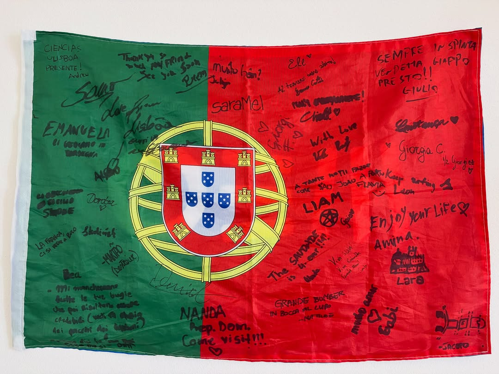
A flag full of signatures and messages from the people who made my Erasmus unforgettable.
View post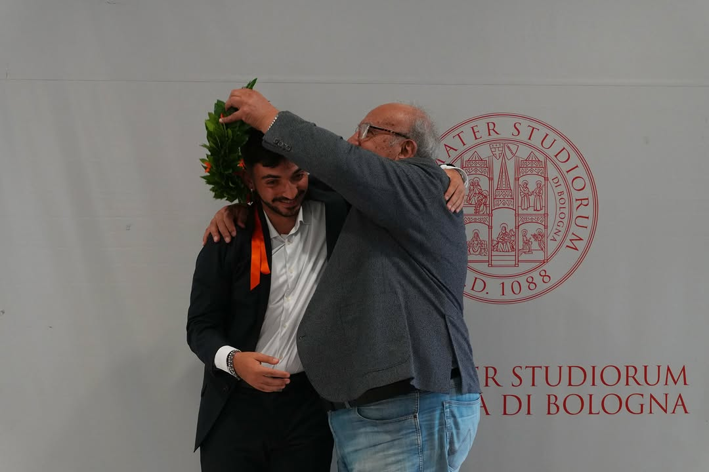
Bologna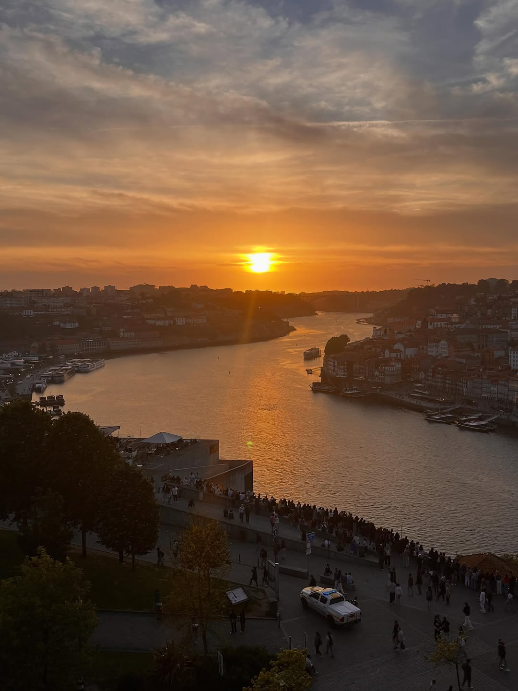
Porto, Portugal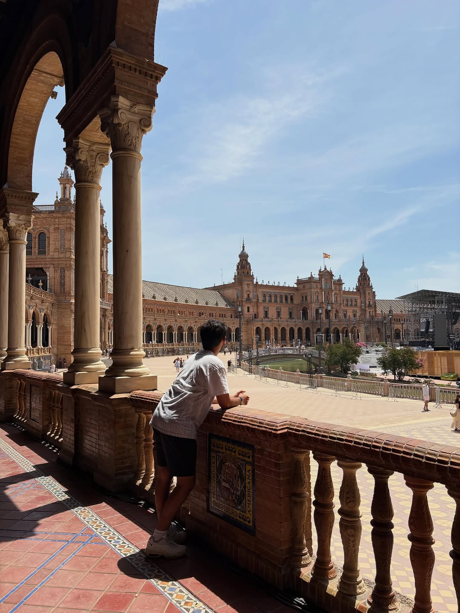
Seville, Spain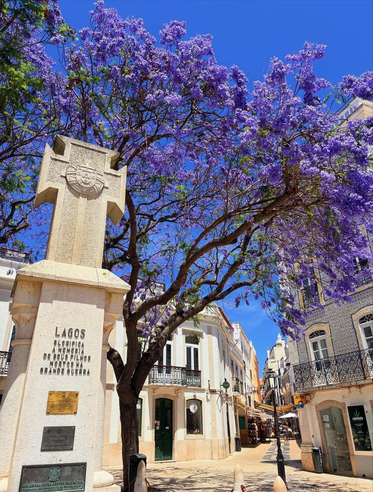
Lagos, Algarve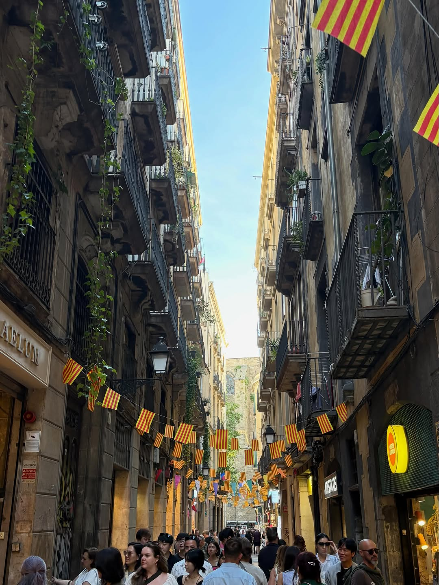
Barcelona, Spain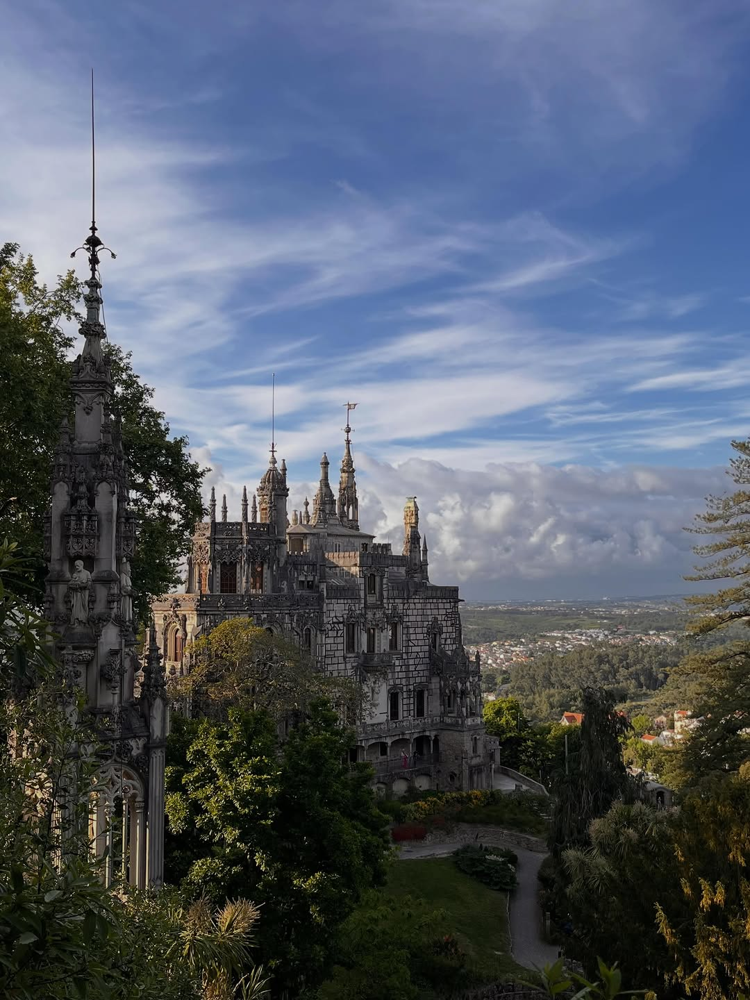
Quinta da Regaleira, Sintra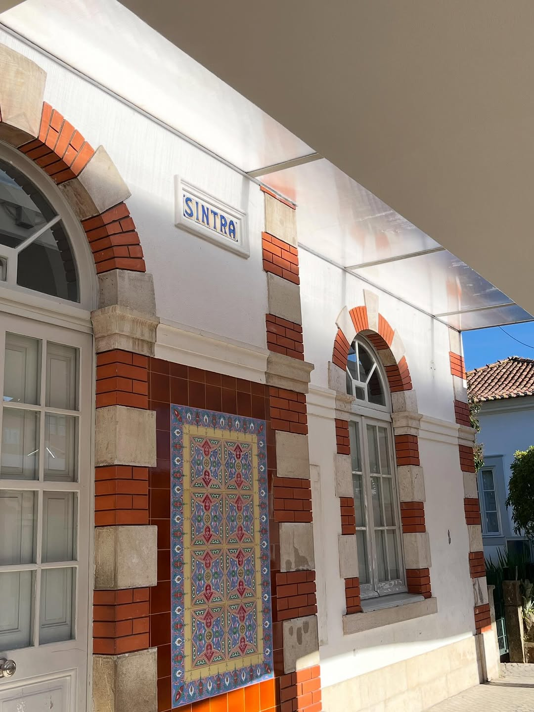
Sintra, Portugal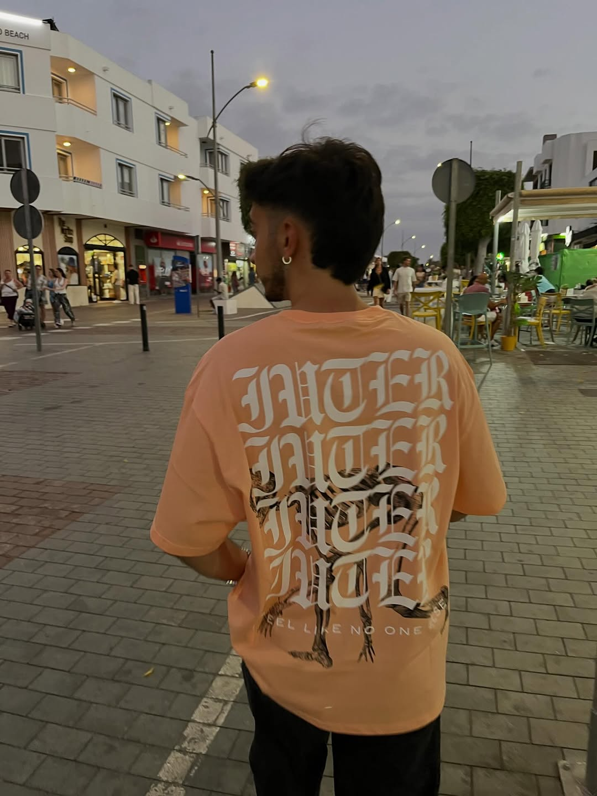
Lanzarote, Canaries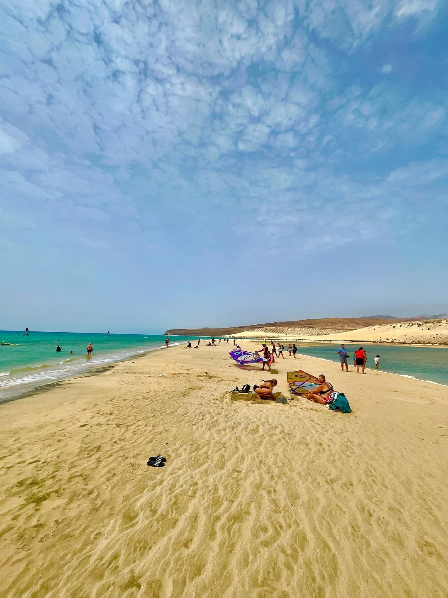
Fuerteventura, Canaries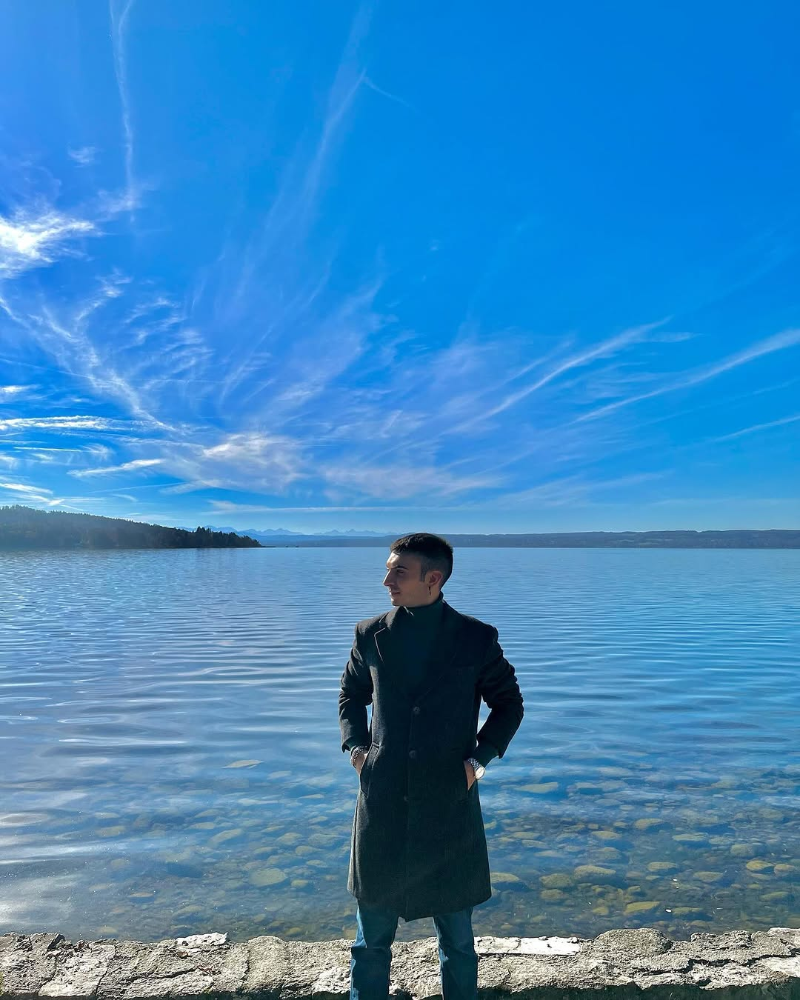
München, Germany05 / Contact
Open to research and data-science roles in biomedicine and neuroscience.
marco.cuscuna01@gmail.com